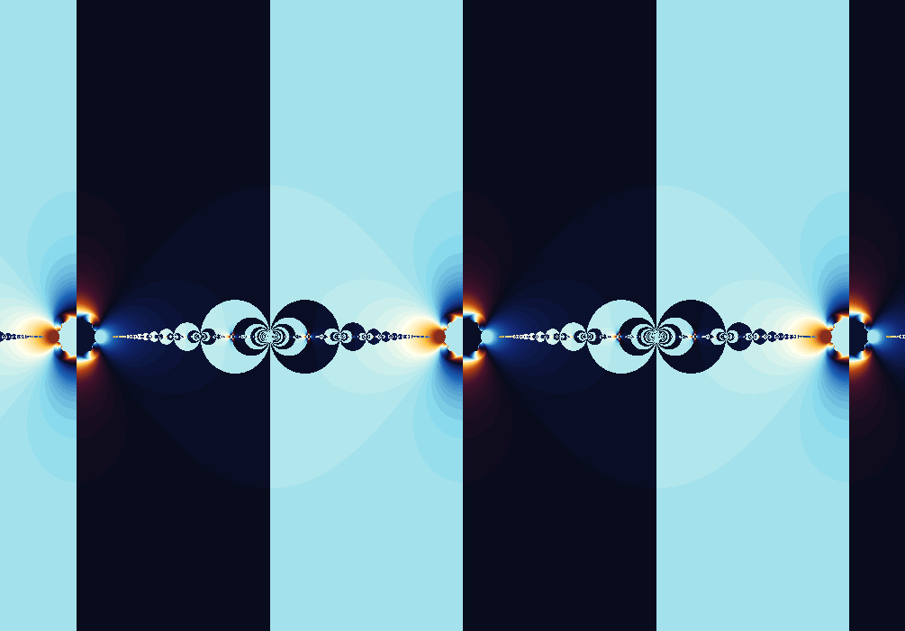

Fractal gallery
Fixed Point Tangent
A convergence map with poles, jumps, and sharp borders.
\(z_{n+1}=\tan(z_n)\)
Tangent has built-in singularities. When you iterate it in the complex plane, those near-infinite jumps make the convergence landscape sharper and less forgiving than sine or cosine.

What to try first
Look for abrupt color transitions. Tangent's poles can fling nearby orbits far away.
Enable orbit display near a boundary and compare it with a point deep inside a basin.
Then visit Fixed Point Sine or Cosine to feel how much calmer those maps are.
Mathematical notes
Why tangent is sharper
wxChaos iterates \(z_{n+1}=\tan(z_n)\). Since \(\tan(z)=\sin(z)/\cos(z)\), the function has poles wherever \(\cos(z)=0\). Points near those poles can move dramatically in one iteration, creating sharp convergence boundaries.